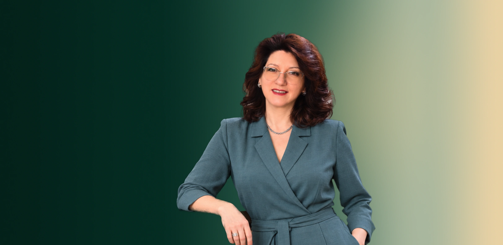
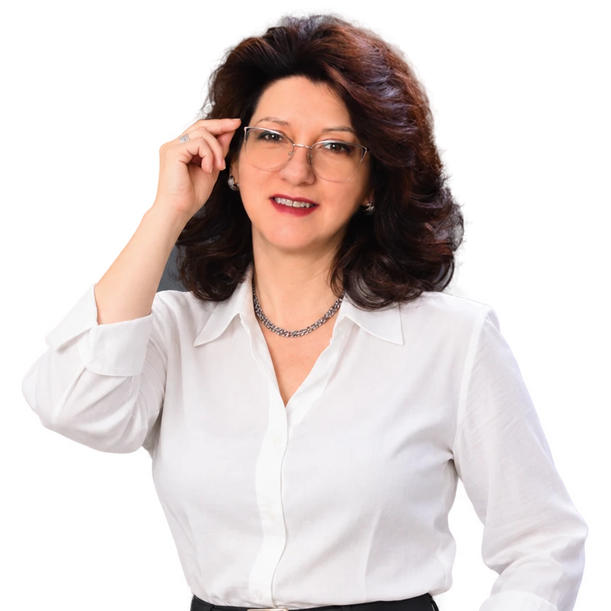
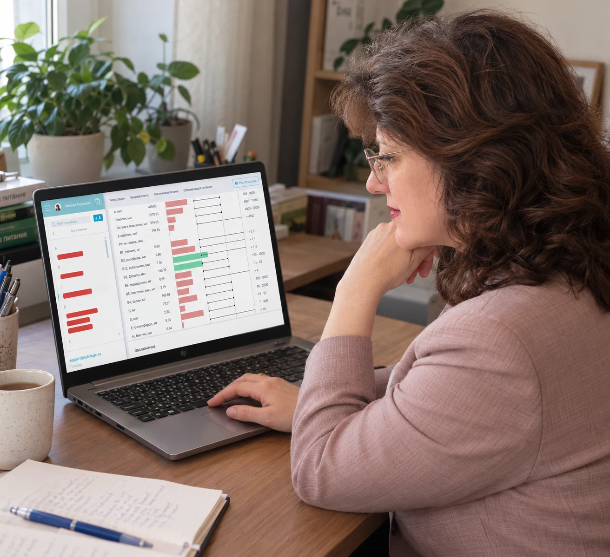

Несколько честных ответов себе —
и вы увидите,
на что опираются
и на чём спотыкаются
ваши личные ресурсы
Ответы никуда не отправляются
и остаются только у вас
Проводник к вашей опоре
У каждого своя стартовая ступенька — и рядом тот, кто принимает ваш темп

Диплом нутрициолога 2023 года дополнил практику организации и контроля качества питания детей. Сегодня этот опыт позволяет мне помогать людям видеть, какая и где проседает опора, и подбирать направление развития и первые безопасные шаги — для каждого индивидуально. Врачебную консультацию это не заменяет: если по ответам видно, что дело серьёзнее образа жизни, об этом говорю прямо
Мой фундамент
сформировали умение объяснять сложное простым языком
стали базой для профессии нутрициолога
научила осознанно выбирать безопасные пути к финансовой опоре
позволяют двигаться выверенными шагами и уважать чужой темп, не навязывая свой
Серия диплома закрыта. Полную копию пришлю в личные сообщения.

Рацион знает, куда уходят ваши силы
Питание в значительной мере определяет ресурсы организма, поэтому анализ рациона — разумный первый шаг
Анализ строится на ваших ответах: анкета о питании заполняется в профессиональной системе Nutrilogic Lite после подтверждения согласий на обработку данных. Результат мини-анализа приходит в течение 24 часов на электронную почту, поэтому адрес нужно указывать работающий и без ошибок. Полный анализ рациона питания проводится с двадцатиминутной консультацией, время которой согласуется заранее. Врачебную консультацию анализ не заменяет
вы заполняете анкету и отвечаете на вопросы о своём рационе в профессиональной системе Nutrilogic Lite, ответ приходит на вашу почту в течение 24 часов
Получить мини-анализ бесплатновы заполняете полную анкету о питании в профессиональной системе Nutrilogic Lite, результаты разбираются вместе на консультации, время по согласованию
3 221 ₽
Записаться на полный анализ рационазачем нужен анализ и чем он помогает
Скачать брошюруЧестно о границах
Лучше сказать об этом заранее, чем потратить ваше время и силы
Анализ рациона и восполнение ресурсов — это спокойная работа в вашем темпе, без быстрых чудес. Если узнали себя в одном из пунктов ниже, лучше начать с другого шага
ищете волшебную таблетку или быстрый результат без собственных шагов
ждёте строгий план «просто повторяй» и готовое решение за вас
хотите жёсткую диету или похудение к определённой дате
надеетесь заменить лечение диетой или «волшебными» БАДамилечит всегда только врач, анализ рациона его не заменяет
Частые вопросы
Напишите Эльвире — ответ придёт в личные сообщения
Написать Эльвире в MAX Написать во ВКонтактеМини-анализ бесплатный, результат приходит на почту в течение 24 часов. Полный анализ рациона питания с двадцатиминутной консультацией стоит 3 221 ₽. Круг ресурсов и брошюру можно получить бесплатно
Сначала вы подтверждаете согласия на обработку данных, затем заполняете электронную анкету о питании в программе Nutrilogic Lite. Для анализа качества рациона питания больше ничего покупать не нужно: мини-анализ бесплатный, полный анализ стоит 3 221 ₽. Адрес почты нужно указать работающий и без ошибок. Результаты полного анализа разбираются вместе на консультации
Нет. Лечит всегда только врач, анализ рациона его не заменяет. Если по ответам видно, что дело серьёзнее образа жизни, об этом говорится прямо
Круг ресурсов работает в вашем браузере: ответы никуда не отправляются и остаются только у вас. Анкета о питании заполняется после того, как вы подтвердите согласия на обработку данных
Консультация длится двадцать минут, время согласуется заранее. Пока запись такая: кнопка записи, подтверждение согласий, затем сообщение Эльвире в MAX
Контакты
Ответ придёт в личные сообщения в течение 24 часов
Больше о ресурсах — в канале «Ресурс жизни»
Торунцова Эльвира Владимировна
самозанятая
ИНН 761600561279